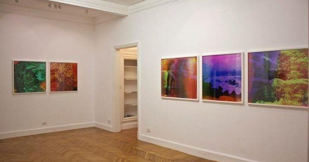
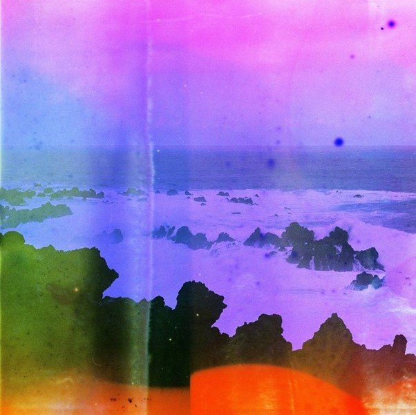
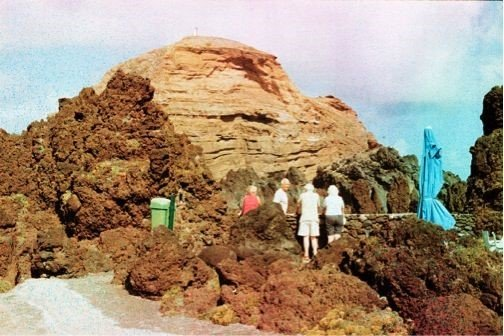

Originally published in Mada Masr on 4 January 2015
By Ismail Fayed
In Measuring the Last Breaths of Time on a Fading Scale, Basim Magdy seems fascinated by tracing the effects of time's passage on our visual memories as well as the very material that constitutes them.
In the two works that make up his Gypsum Gallery show — a series of large photographs and a short film — Magdy elaborately tries to demarcate the traces of time. He creates visual tokens that replicate time's imprint in ways that are intensely physical but have a phantasmic and meditative quality all at once.
The results are hybrid materialities that make us wonder about the very technical nature of creating an image and the almost mystical process of perceiving and understanding it.

Overview of Basim Magdy's exhibition at Gypsum Gallery. Courtesy: Basim Magdy / Gypsum Gallery
The large, framed chromogenic photos, all of landscapes and all printed on metallic paper, range from giant boulders to seashores to thickets of trees. The negative for each was exposed to household chemicals that interacted with its material in a unique way, creating unusual physical and color effects.
We find an image of trees divided along blue and yellowish hues, like giant spilt spots of ink, looking almost sci-fi. A giant boulder is displayed in hues of green, blue and red, as though it were an image captured under bioluminescent light. The only picture with humans in it — against the backdrop of a natural landscape — has tiny green spots peppered all over its surface, like tiny fireflies (A Lifetime Spent Digging for Hibernating Gold, 34 x 51cm). The chemicals work to the advantage of some images, as in the case of one rocky scene imbued with beautiful warm red tones that transform the entire image into a recollection, not just of color, but of the actual warmth colors can inspire (The Cautious Passing of Light Through Endless Layers of Forgiveness, 82 x 100 cm).

A World Within a World Within a World Within a Green Coral Wall (2014), C-print from chemically altered negative on metallic paper, 82 x 82 cm. Courtesy Gypsum Gallery
The process of treating photos with carefully selected chemicals to create certain effects or to discover what kind of effects these chemicals will have raises questions about the physical nature of photography in an age when most people understand it more as a digital process. It is also a nod to the long history of chemical accidents that shaped photography as we know it today — from Angelo Sala's accidental discovery of the photosensitivity of sliver nitrate to Daguerre's accidental discovery of iodized sliver plates.
Observing those effects on images of nature reminds us of nature's vulnerability to the technical and industrial dimensions of production, and at the same time of the vulnerability of our own memories and visual perceptions. The effects of time come later, after one has contemplated the image. The immediate visual impact of the landscapes, coupled with the material manipulation that produces spots, dots and bizarre hues, triggers an initial emotional and psychological reaction. But as one tries to recall the image afterward, the subtle, abstract idea of its relation to time sinks in.

A Lifetime Spent Digging for Hibernating Gold (2014), C-print from chemically altered positive on metallic paper, 34 x 51cm. The only work featuring human figures, with firefly-like chemical effects. Courtesy Gypsum Gallery
Time Laughs Back at You Like a Sunken Ship from Basim Magdy on Vimeo.
Time Laughs Back at You Like a Sunken Ship (2012), a wordless 9-and-a-half-minute Super-8 film transferred to HD video, opens with a scene in a botanical garden, inside a greenhouse for the type of giant water lily that is, ironically, named after Queen Victoria: A reminder of the crude political ways in which colonialism categorized various things as "scientific discoveries." The greenhouse and the large, exotic plant are eerily reminiscent of 18th-century colonial expeditions and their fascination with collecting the strange and exotic.
A protagonist appears behind a rather baroque contraption with panels that open up to several mirrors on his side and a painted, almost modernist abstraction on ours. It has two viewing holes through which we see him looking back at us. The angle changes and we see other parts of the greenhouse and the contraption, which the protagonist carries.
The scene then shifts to what looks like Pompey's Pillar in Alexandria, and the Roman amphitheater. Both are seen from multiple angles, which also show the urban landscape surrounding them. It cuts back, in between, to the botanical garden and our protagonist, setting and resetting the odd contraption.
All of this is accompanied by a soundtrack that alternates between soft, metallic piano music and unsettled rustling.
Video by Medrar.TV, an online contemporary Arab arts channel
The task of the spectator in deciphering the layers of historical references and imagery may appear daunting at first. But there's something about the music and the pace of how the images progress that relieves one from that pressing urge. The sound gives us cues, almost pointing where to look and when.
The botanical garden, the Roman triumphal column, and amphitheater all denote spaces that create their own sense of time, the protagonist becoming a metaphor of our position in looking at them. It triggers the thought that an image is never the sum of what appears, but rather what the viewer makes of it: The visuals and the viewer co-author the total effect we come to understand as a visual experience.
Continuing Magdy's general usual use of non-linear narratives, surreal imagery and haunting sounds in his art practice, the successive unfolding of the images in Measuring the Last Breaths of Time on a Fading Scale challenges our general impulse to characterize them as belonging to a certain time or place. While they contain a multiplicity of information, they also remain trapped in Magdy's own sonoric and visual landscape.
Basim Magdy's "Measuring the Last Breaths of Time on a Fading Scale" showed at Gypsum Gallery until January 13, 2015.